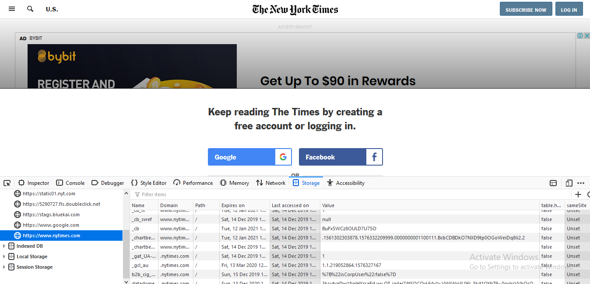
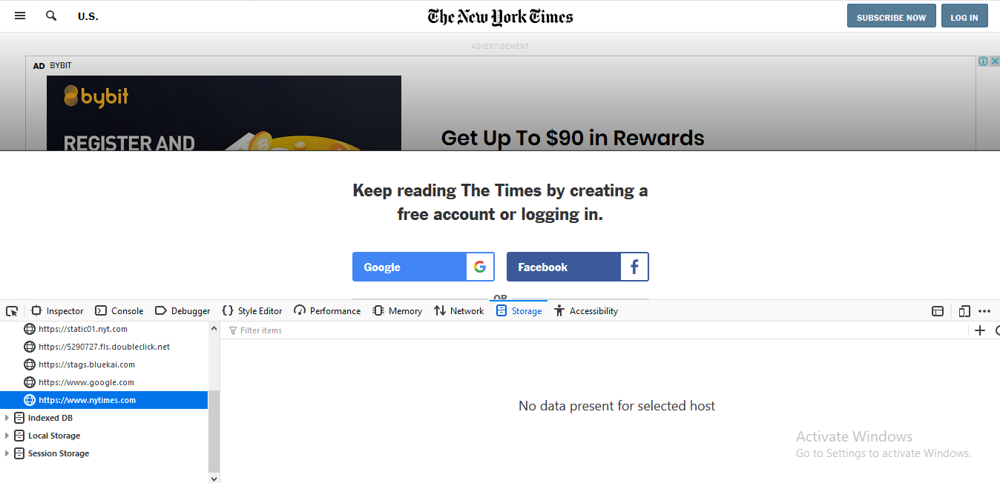
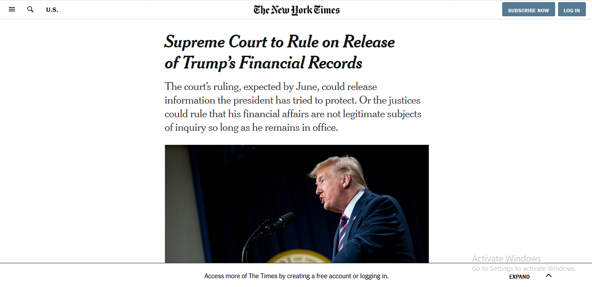

Continue reading NY Times freely
Reading local newspapers online freely, I was unaware that some papers are charging even for their online news stories. First time when I browsed, I habitually opened almost every headline of New York Times in new tab. And when I headed to read complete stories, I came to know that I was interdicted to read the stories till I subscribe for it. I tried to find some solutions online, but workarounds were not up to the mark. Most of you may have observed that the pop up appears once the whole story is loaded, and my presumption was that task was not a difficult task. So, I decided to find some way myself and cut the Gordian knot.
- Open the selected news story.
- Press F12, and select the Storage (firefox)/ Application (Chrome) tab.
- Explore Cookies. 
- Right click on https://nytimes.com and select Delete All. 
- Refresh the page (by pressing F5 key) 

Bingo!